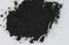

|
|
(For further information on spectroscopy, see:
http://speclab.cr.usgs.gov)
TITLE: Covellite HS477 DESCRIPT
DOCUMENTATION_FORMAT: MINERAL
SAMPLE_ID: HS477
MINERAL_TYPE: Sulfide
MINERAL: Covellite
FORMULA: CuS
FORMULA_HTML: CuS
COLLECTION_LOCALITY: Montana
ORIGINAL_DONOR: Hunt and Salisbury Collection
CURRENT_SAMPLE_LOCATION: USGS Denver Spectroscopy Laboratory
ULTIMATE_SAMPLE_LOCATION: USGS Denver Spectroscopy Laboratory
SAMPLE_DESCRIPTION:
IMAGE_OF_SAMPLE:

END_SAMPLE_DESCRIPTION.
XRD_ANALYSIS:
40 kV - 30 mA, 7.3-9.5 keV
File: covel477_mdi, *.out (smear mount on quartz plate)
References: JCPDS #6-464, #42-1340; Huebner's reference patterns
Found: Covellite, subequal pyrite, unidentified moderate to
weak reflections at 4.72, 3.99, 3.70, 2.84, and 1.857 Angstroms
Comment: Covellite and pyrite reflections are sharp suggesting a good degree of crystallinity and, in the case of covellite, compositional heterogeneity. Additional reflections (6) are of weak to moderate intensity and have not been identified - they may represent two or more phases. Needs more work.
HS477.2B Covellite 40 kV - 30 mA, 7.3-9.5 keV File: covel477.mdi, *.out (smear mount on quartz plate) References-. JCPDS #6-464, #42-1340; Huebner's reference patterns Found: Covellite, subequal pyrite, unidentified moderate to weak reflections at 4.72, 3.99, 3.70, 2.84, and 1.857 A Comment: Covellite and pyrite reflections are sharp suggesting a good degree of crystallinity and, in the case of covellite, compositional heterogeneity. Additional reflections (6) are of weak to moderate intensity and have not been identified - they may represent two or more phases. Needs more work.
END_XRD_ANALYSIS.
COMPOSITIONAL_ANALYSIS_TYPE: None # XRF, EM(WDS), ICP(Trace), WChem
COMPOSITION_TRACE: None
COMPOSITION_DISCUSSION:
END_COMPOSITION_DISCUSSION.
MICROSCOPIC_EXAMINATION:
Lead gray metallic luster, trace white impurities. G. Swayze.
END_MICROSCOPIC_EXAMINATION.
SPECTROSCOPIC_DISCUSSION:
END_SPECTROSCOPIC_DISCUSSION.
SPECTRAL_PURITY: 1b2b3b4b # 1= 0.2-3, 2= 1.5-6, 3= 6-25, 4= 20-150 microns
| LIB_SPECTRA_HED: | where | Wave Range | Av_Rs_Pwr | Comment |
|---|---|---|---|---|
| LIB_SPECTRA: | splib04a r 1292 | 0.2-3.0µm | 200 | g.s.= 17 µm |
| LIB_SPECTRA: | splib05a r 2261 | 0.2-3.0µm | 200 | g.s.= |
| LIB_SPECTRA: | splib06a r 6475 | g.s.= | ||
| LIB_SPECTRA: | splib06a r 6486 | g.s.= |
{kind=link}